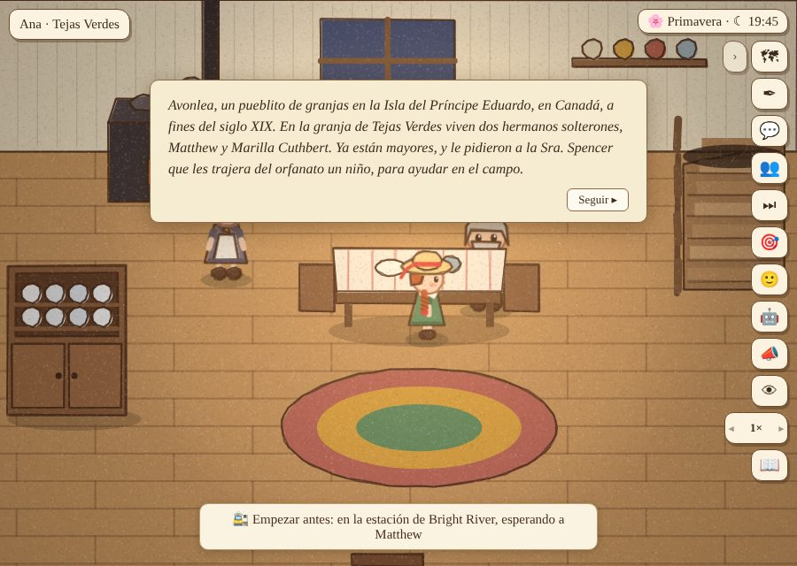
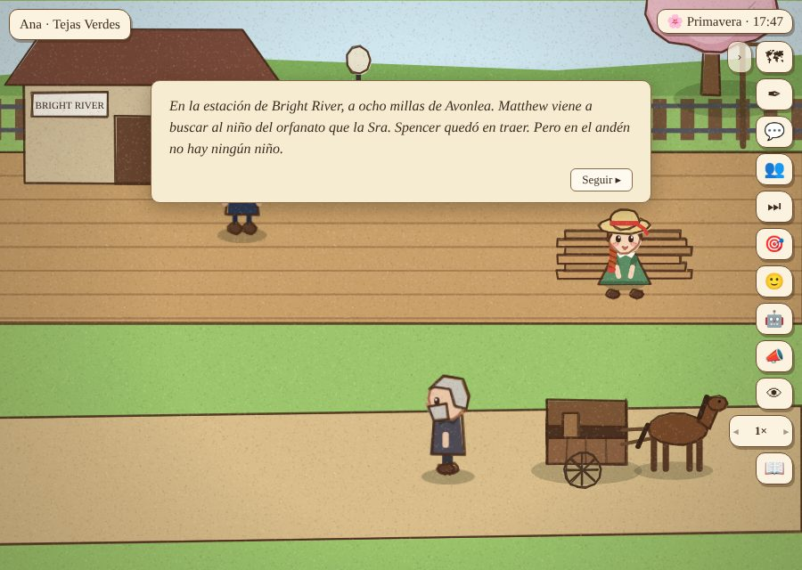
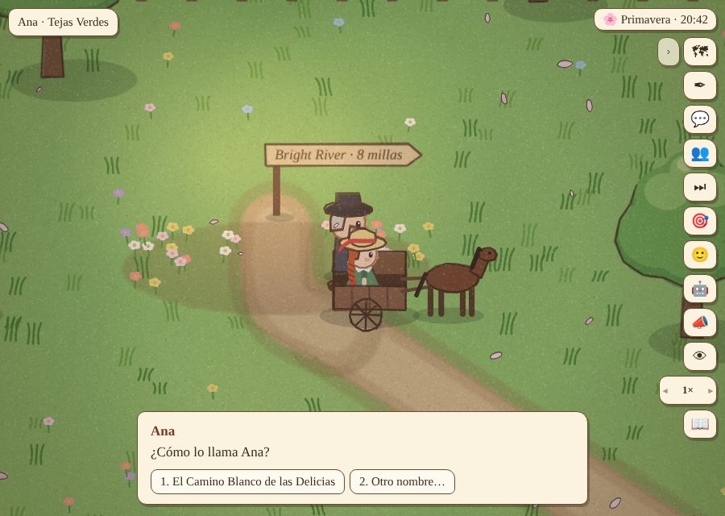
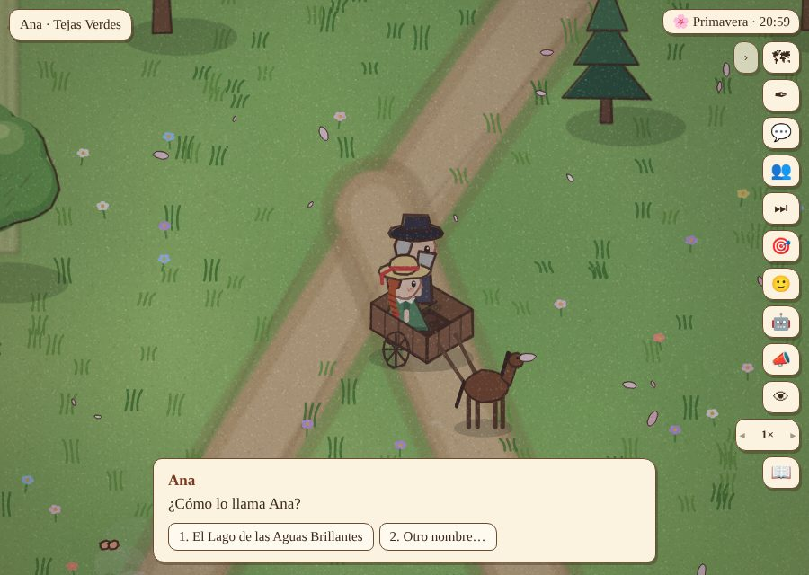
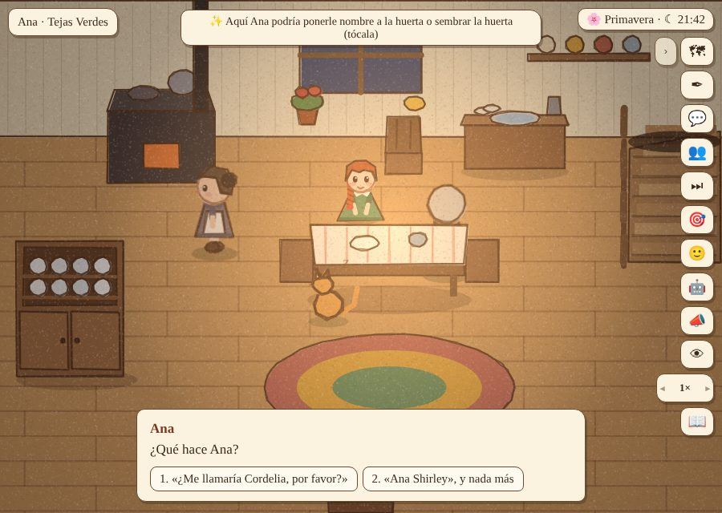
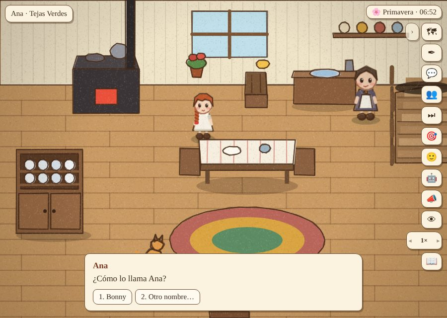
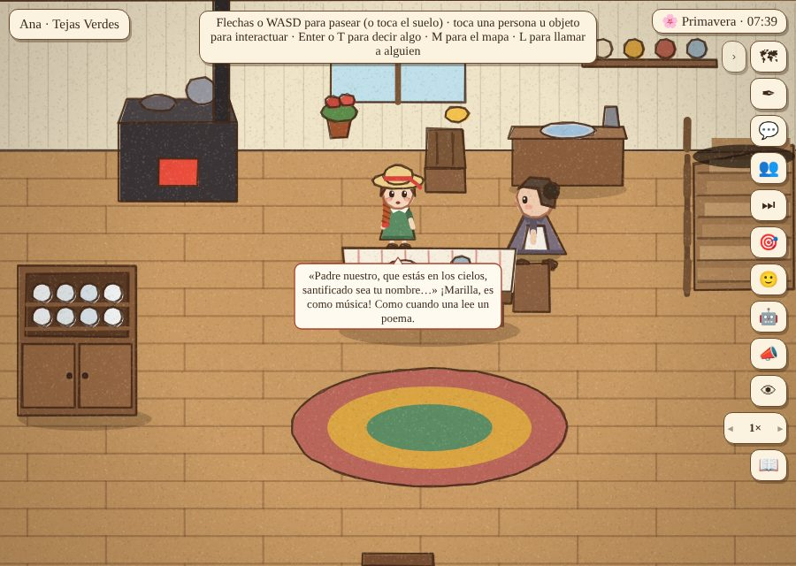

Prueba de usuaria: los días a prueba, desde la estación de Bright River
Del primer minuto hasta que Marilla le dice que se queda (días 1 a 3, cap. 2 a 8 del libro), con lo nuevo: el comienzo en la estación, el viaje con Matthew, Bonny y la tarjeta del Padrenuestro. Jugada con clics. Cada error, una regla general. ← Partida 8 · las siete jugadoras automáticas
Lo que pasó, y la regla que salió de cada error
- Al empezar, un botón: «🚉 Empezar antes: en la estación de Bright River, esperando a Matthew» (hay que tocarlo dos veces; si no, la partida empieza como siempre, en Tejas Verdes). La primera versión preguntaba con una caja que paraba todo, y las pruebas automáticas se trababan; y la jugadora impaciente lo confirmaba sin querer con Enter. Regla: lo que se ofrece al empezar no detiene el juego, ni toma el teclado.
- En la estación: no había ninguna tarjeta que dijera dónde estábamos (la de siempre no salía porque Ana todavía no se ve: viene en el tren), y la tarjeta de la Sra. Lynde en su ventana salía después, en pleno viaje. Regla: lo que el capítulo cuenta sin Ana, con tarjetas, ya pasó cuando ella llega.
- El viaje: Ana sentada en las tejuelas, Matthew, el jefe de estación, la calesa, el cerezo de la curva, Newbridge, la Avenida, «El Camino Blanco de las Delicias», «El Lago de las Aguas Brillantes», Tejas Verdes bajo la estrella. La barra «📖 Capítulo 1» tapaba la segunda opción del nombre. Regla: ninguna barra se dibuja sobre una elección o una tarjeta (vale también para la calesa en una partida normal).
- Al llegar, volvían a salir las tarjetas de «Avonlea, un pueblito…» y «En la estación… Ahora llegan juntos», que la jugadora acababa de jugar. Regla: «narra salvo:» en el guion: una tarjeta no cuenta lo que se acaba de jugar.
- Llegaron a las 21:40. La tarjeta dice «Ahora te toca a ti: lleva a Ana a su pieza», y en el mismo instante Marilla se la llevaba sola («Ya es noche cerrada»). Regla: lo que una tarjeta le pide a la jugadora, le da tiempo para hacerlo (
horas_desde:llegada_tv:0.5, una condición nueva). - Al día siguiente, en la cocina: el geranio de la ventana. «Marilla, ¿cómo se llama ese geranio?» … «¿De qué sirve ponerle nombre a un geranio?» … Bonny (o el nombre que la jugadora quiera; sola, también puede bautizarlo).
- Matthew: «¿Cómo le dirías al estanque de los Barry?», cuando ella lo bautizó delante de él en la calesa; y Ana le contaba los nombres que les puso a los lugares, que él vio poner. Regla (reglas.txt): preguntarle cómo llamaría algo, mientras todavía no le puso nombre.
- El día 3, a media mañana: Marilla le da la tarjeta del Padrenuestro; Ana la apoya contra el jarro mientras lava: «¡Es como música!» — «Lo voy a aprender igual, aunque me devuelvan».
- Antes del anuncio de las 14:00, Marilla ya le explicaba por qué se quedaban con ella («Matthew lo quiso desde que te vio…»). Regla (reglas.txt): lo que revela que se quedan con ella, después de que se lo dicen.
- La Sra. Lynde la conoció el día 3 en Tejas Verdes (en el libro viene a las dos semanas): iba a «visitar a la Sra. Barry», y la Sra. Barry estaba de visita en Tejas Verdes. Regla: visitar a alguien es ir a su casa, con esa persona adentro; no seguirla adonde esté de visita.
- Arriba a la izquierda decía «Ana · Tejas Verdes» en todas partes (en Bright River, donde la Sra. Lynde). Ahora dice dónde está.







Lo que queda anotado
- La tarjeta del Padrenuestro solo pasa si Ana está con Marilla esa mañana: de las siete jugadoras automáticas, solo la exploradora la vio (las demás se quedan en su pieza). Si importa, Marilla podría subir a dársela.
- Bonny solo se bautiza si la jugadora mira el geranio: está a la vista en la ventana, con su flor roja.